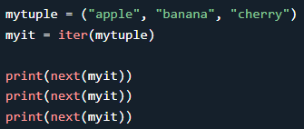

An iterator is an object that contains a countable number of values.
An iterator is an object that can be iterated upon, meaning that you can traverse through all the values.
Technically, in Python, an iterator is an object which implements the iterator protocol, which consist of the methods
__iter__() and
__next__()
Iterator vs Iterable
Lists, tuples, dictionaries, and sets are all iterable objects. They are iterable containers which you can get an iterator from.
All these objects have a iter() method which is used to get an iterator:
